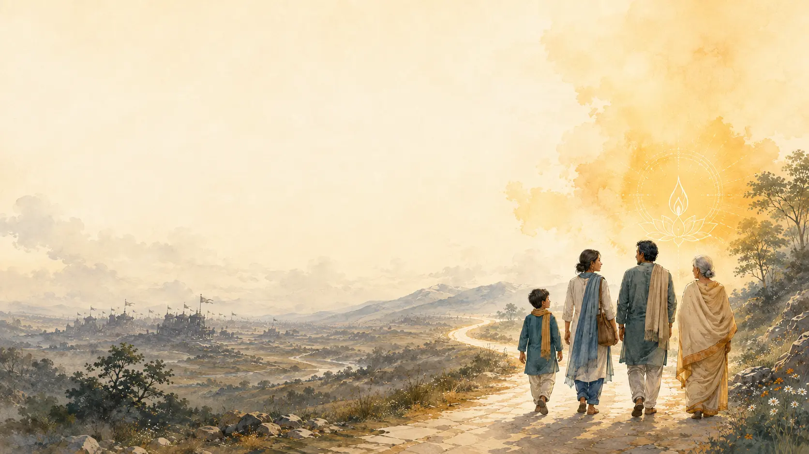
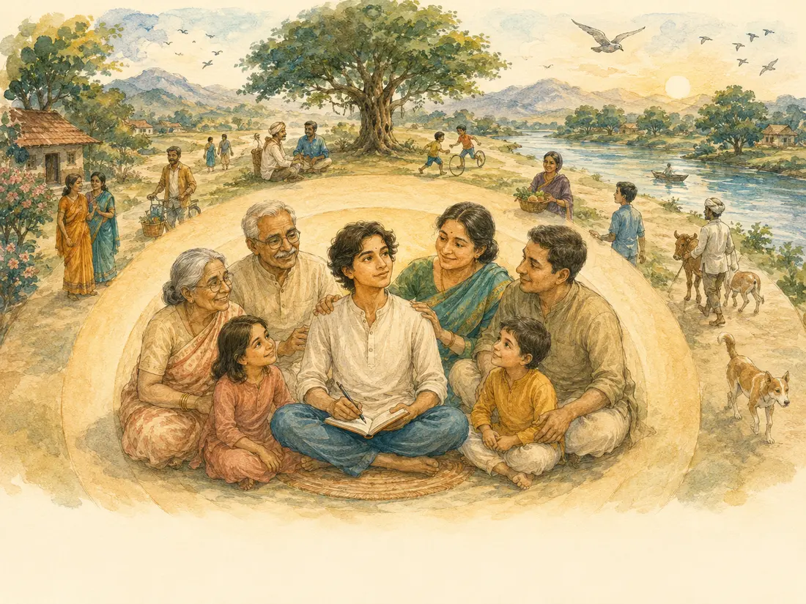
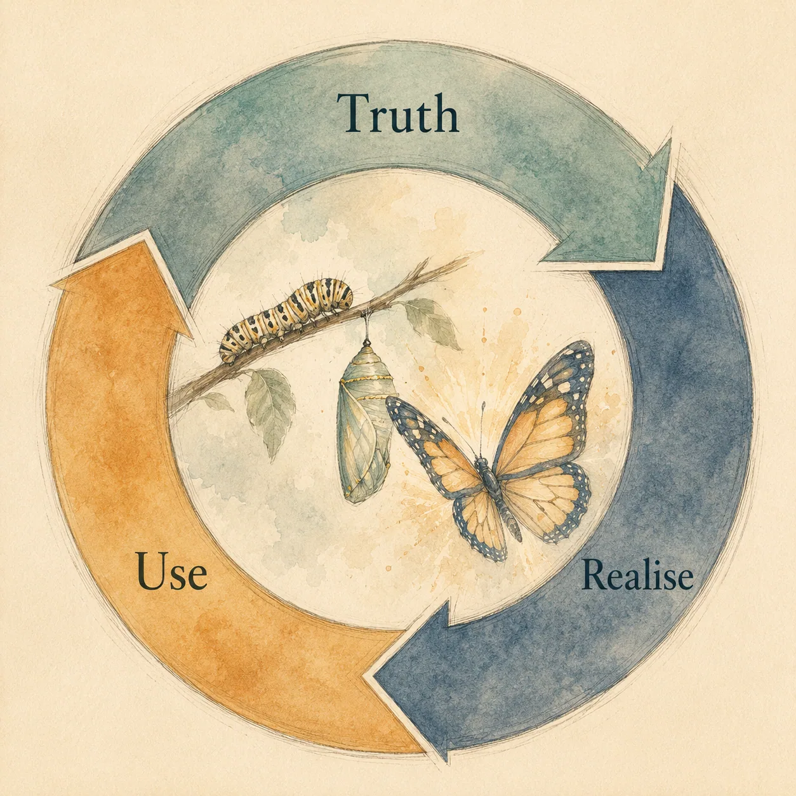
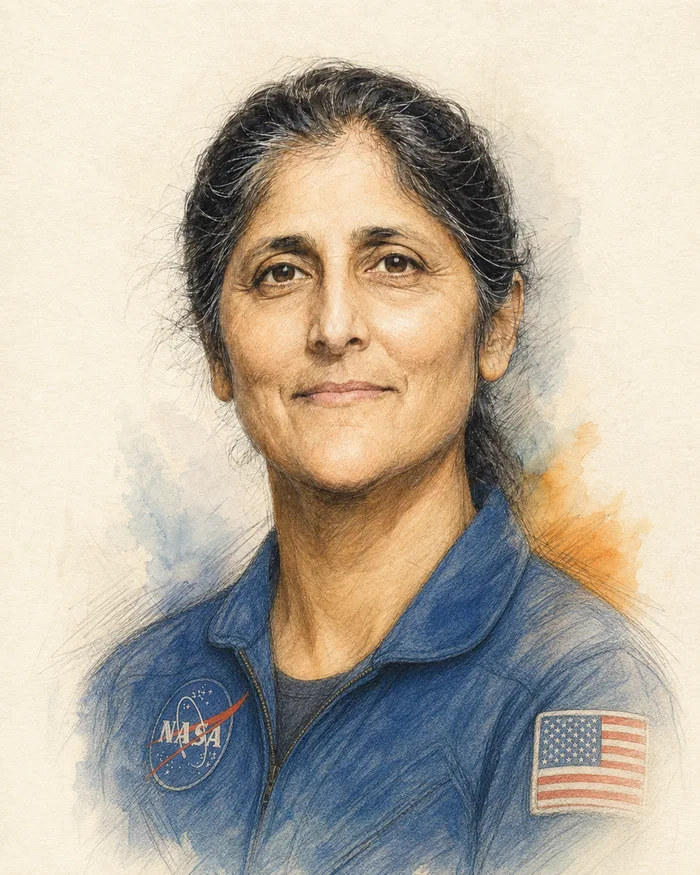
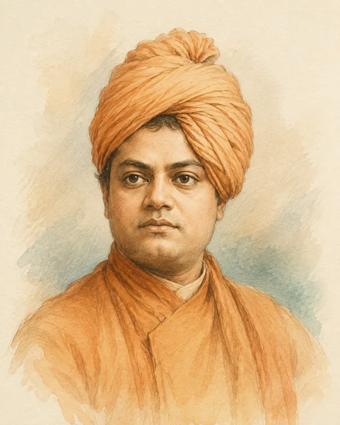
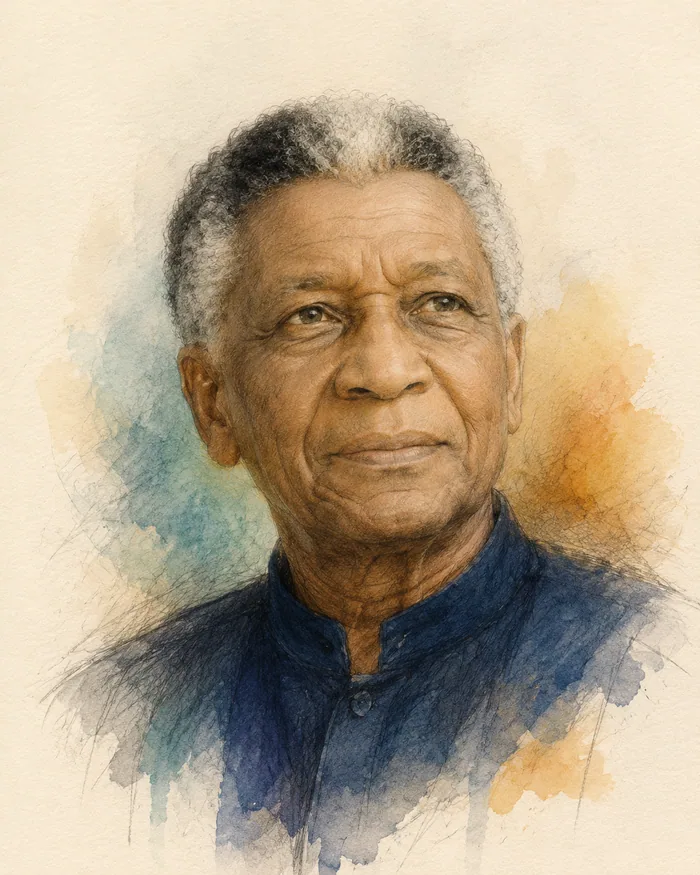
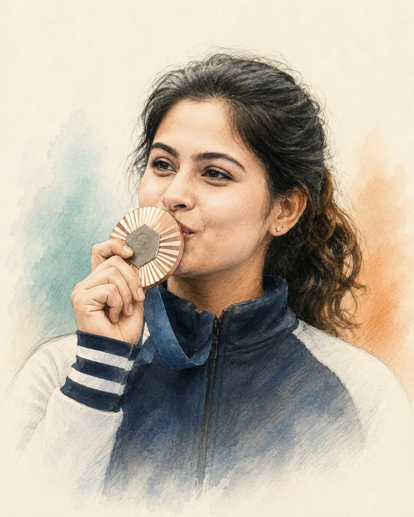
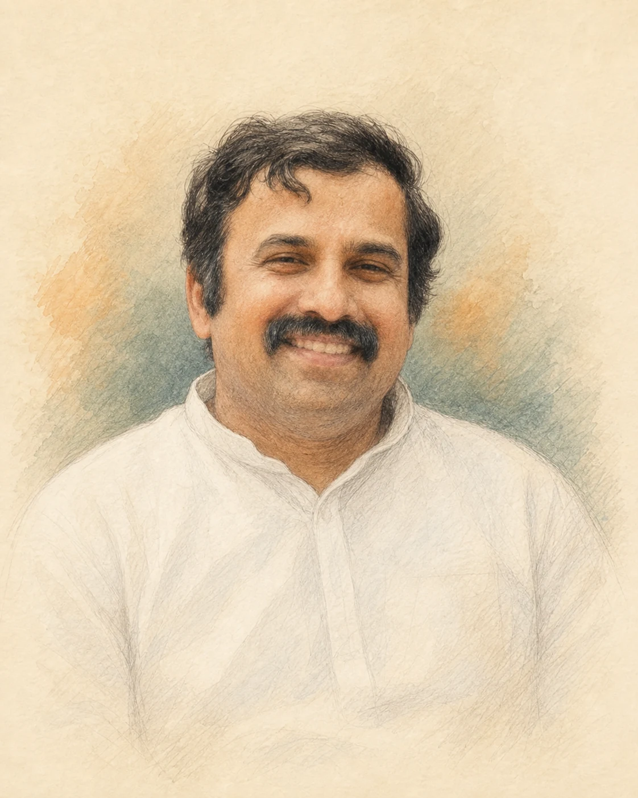
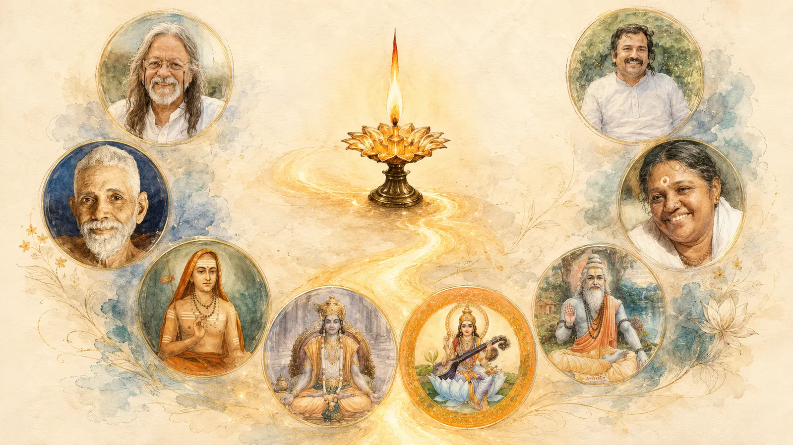

Hugh Jackman
Cinema & performing arts · 1968–presentThe actor has spoken about being drawn to the Gita and the wider Vedic tradition in his search for truth and an understanding of mortality.
↗
An invitation to learn
Across age, gender, nationality, culture and belief, the Gita invites us to discover the light within—and bring that clarity into the way we live.
Begin your learning journey Open to children, youth, adults and elders.
Truth. Realise. Use.
It does not ask us to escape the everyday life. It helps us see more clearly within it—our confusion, duty, relationships, decisions and deepest possibilities.
A living science of transformation
Gita learning moves from truth heard, to truth examined, to truth realised and used. Its “scientific” spirit lies in sincere inquiry: observe, test through life, reflect on the result and refine one’s understanding.

Across times & cultures
Thinkers, leaders, teachers and explorers across generations have turned to the Gita for courage, philosophical inquiry and inner steadiness.
The actor has spoken about being drawn to the Gita and the wider Vedic tradition in his search for truth and an understanding of mortality.
↗
The astronaut carried the Gita to space as a companion for reflection.
↗
The monk and philosopher interpreted the Gita as a call to strength, self-mastery and fearless action.
↗
Growing up under apartheid, he read the Bhagavad Gita in a search for knowledge that helped preserve inner freedom amid external oppression.
↗
The Olympic medallist has spoken of reading the Gita and carrying its teaching—focus on action, not the result—into competition.
↗How we learn
Learning is guided, reflective and connected to real situations—not reduced to memorising verses or accepting conclusions.
Chanting builds intimacy with the shlokas. Dialogue opens inquiry. Contemplation connects wisdom with one’s inner life. Practice carries it into choices and relationships.
Encounter the shloka with attention, rhythm and meaning.
Enter the human question through story, dialogue and lived examples.
Recognise what the teaching reveals about one’s own field of experience.
Try the insight in a real situation, return, reflect and deepen.
Our purpose
Gita Jyoti is an initiative of the Light of the Self Foundation. It is offered as gratitude and service to the great masters who kept this wisdom alive.
Our purpose is to make sincere Gita learning available across age, nationality, culture and belief—so that Krishna is not only admired outside, but discovered as clarity, love and wisdom within each one.
To kindle the light of self-knowledge—and serve the unfolding of that light in everyday life.

Our founder
A teacher of Vedanta for more than twenty-five years, Sri Prabhuji founded Light of the Self Foundation as a volunteer-led, non-commercial initiative. Inspired by his teacher Shri Ajja, he has guided seekers from varied walks of life through talks, workshops and self-inquiry.
About the Foundation & Sri Prabhuji →Offered in gratitude

We offer this learning in remembrance of the lineages, teachers and embodiments of wisdom whose lives continue to illuminate the way—from timeless spiritual sources to living guides.
The invitation is open
Begin a guided journey into the wisdom of the Bhagavad Gita, with learning pathways for different ages and stages of life.
Enrol to learn